Walk-Through Example: Cell Fate Specification in Ascidian Embryo¶
In Kobayashi et al., 2018, the authors performed FC analysis from Mochizuki et al., 2013 on a gene regulatory network (GRN) of seven tissues that specifies cell fates in embryos of the ascidian Ciona intestinalis (type A; also called Ciona robusta). After performing FC analysis, the authors identified five key molecules. By controlling the activities of these key molecules, the specific gene expression of six of seven tissues observed in the embryo was successfully reproduced.
In this example, we show how OCSANA+ can reproduce the FC analysis in addition to the results from control experiments in Ascidian embryos. Additionally, we explore how the extended Feedback Vertex Set Control (FC) with source nodes (Zanudo et al., 2017) and OCSANA functionalities could increase the accuracy of simulated results.
For the full results of this example, please see `OCSANA+supplementary file`_
You can download the .sif file used in this tutorial here
Step 1: Initial Cytoscape Setup¶
Upon launching Cytoscape, a new session will be opened. You can load the ascidian embryo network by selecting “Import Network from file System” icon in the toolbar
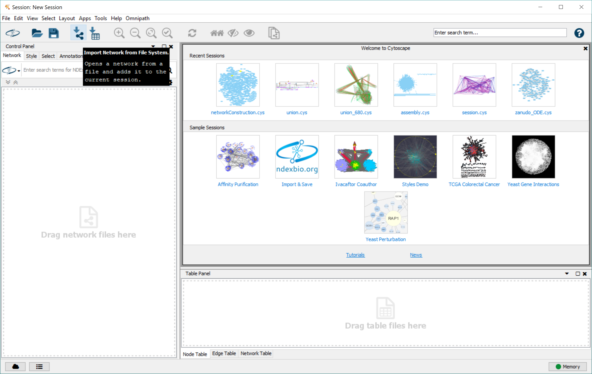In the pop-up menu, navigate to the folder where you stored the network, and select the file.
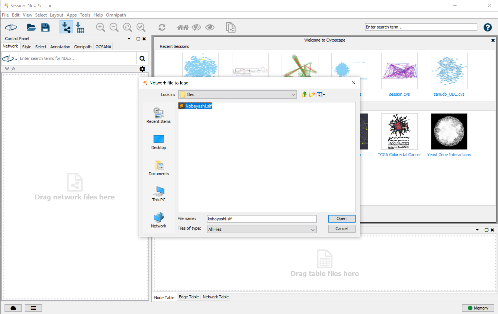Step2: Identifying Feedback Vertex Set Control Sets (FC)¶
To first reproduce the results of Kobayashi et al., 2018, we perform Feedback Vertex Set Control (FC) Discovery.
From the Apps dropdown in the toolbar navigate to “OCSANA>Feedback Vertex Set Control. OCSANA+ provides two algorithms for identifying FC sets: with or without source nodes (You can read more about these two algorithms in <`OCSANA+ paper supplement`_, Mochizuki et al., 2013, or Zanudo et al., 2017.).
To replicate the results of Kobayashi et al., 2018, select “without source nodes”
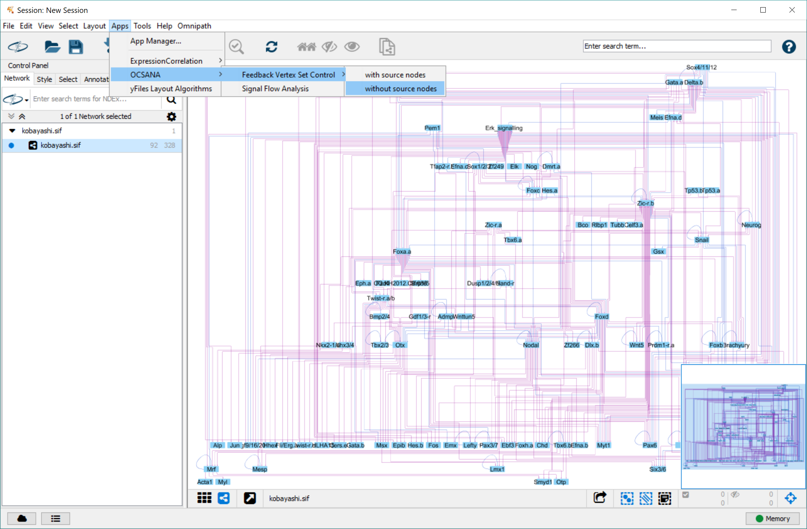In the pop up menu:
- Set “select node name column” to “shared name”
- For this tutorial example, we will do an unbound FVS Discovery search. This will run the FVS algorithm 50 times to identify FVSes. Note that there may not be 50 FVSes in the network, so the number of FVSes returned may be fewer than 50.
Select “Identify Feedback Vertex Set Control Set”
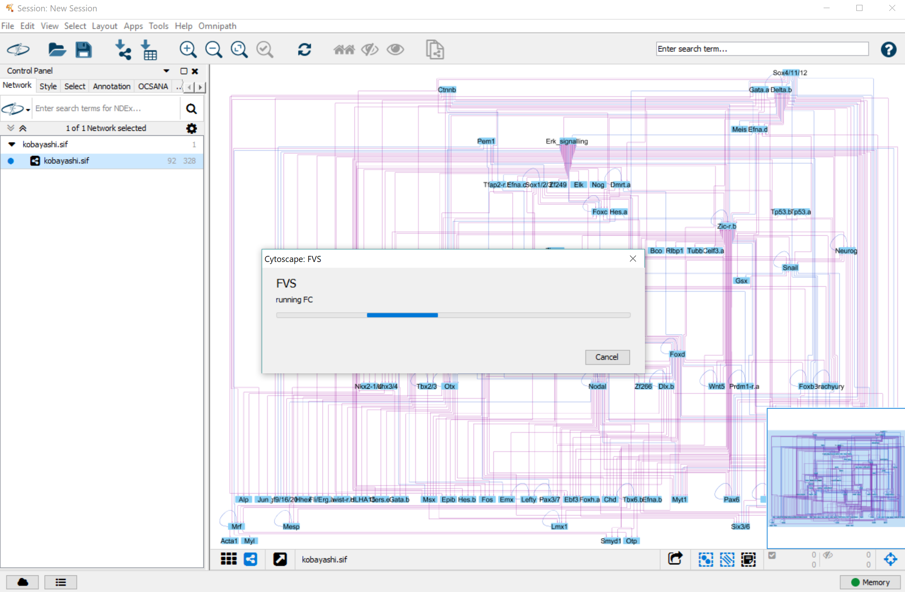The results will be displayed in the FC subpanel of the Results Panel. Minimal FC sets are highlighted
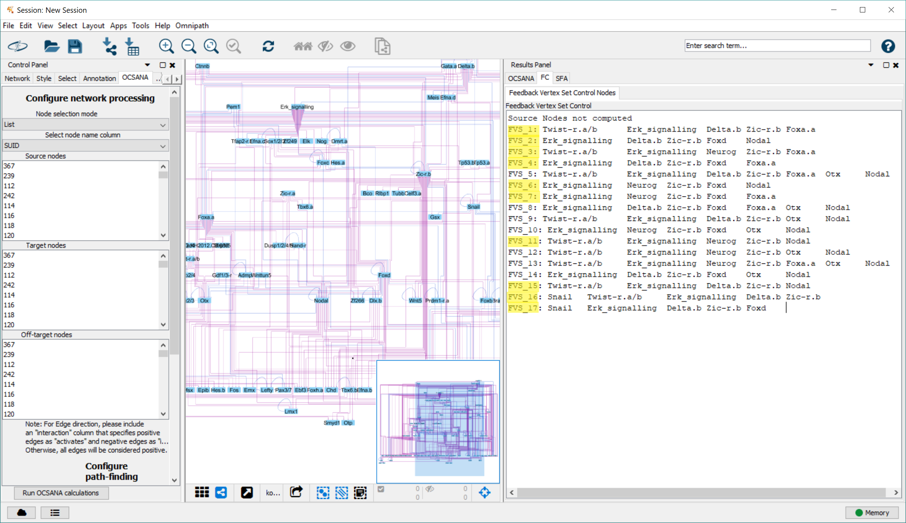Step 3: Simulating FC node perturbations using SFA¶
We will focus on the FC set used in Kobayashi et al., 2018 in vivo perturbations for our simulation with SFA The FC set consists of the following 5 nodes
Foxa.a, Foxd, Neurog, Zic-r.b, and Erk signaling
To simulate the experimental results in Kobayashi et al., 2018 we will use Signal Flow Analysis (SFA) to estimate the log steady state values of network nodes (Lee and Cho, 2018)
First, we simulate the “unperturbed” state (no up-regulation or down regulation of FC nodes), by activation of Gata.a and Zic-r.a which are noted to initiate the zygotic developmental program.
From the Apps dropdown in the toolbar navigate to “OCSANA>Signal Flow Analysis”.
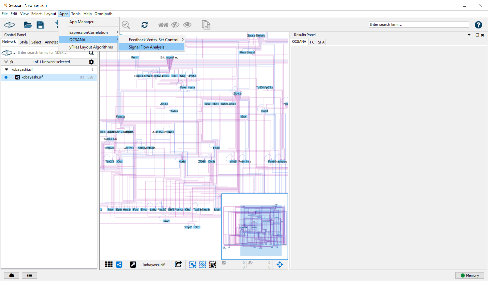In the pop-up menu:
- select either “List” or “String” for Node Selection Mode
2. select “shared name” for Select Node Name column 3a. If “List” is selected, scroll in the “Activated Nodes” box and ctrl+click Gata.a and Zic-r.a
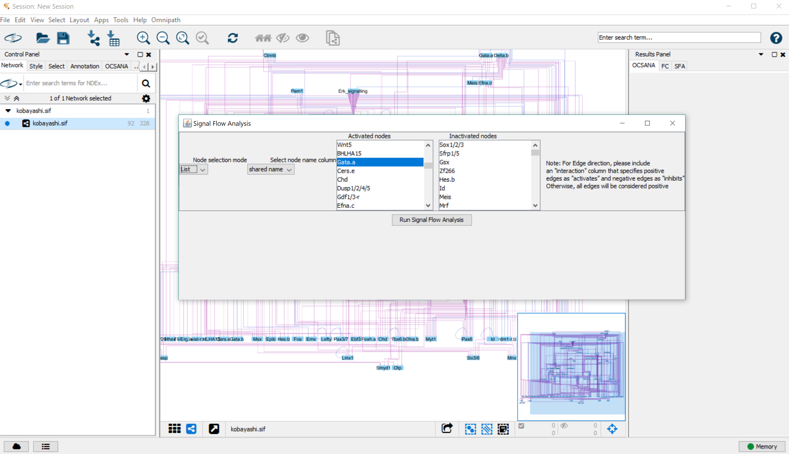3b. If “String” is selected, type Gata.a and Zic-r.a into the “Activated Nodes” box (either comma delimited, or newline delimited)
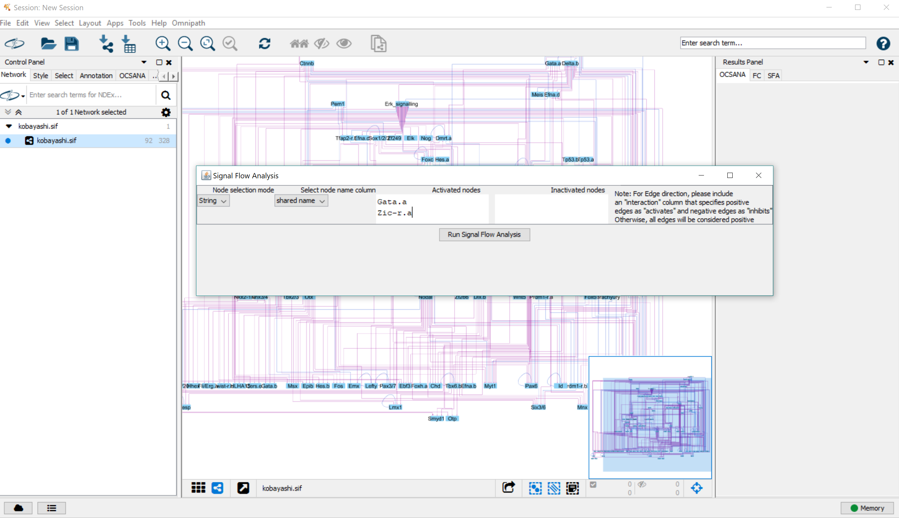To start SFA, click “Run Signal Flow Analysis”
After completion of SFA, the results will appear in the SFA tab of the Results Panel.
The “SFAConfig” tab displays which nodes were activated or inhibited in the initial configuration
The “SFA” tab displays the steady state log values for all network nodes.
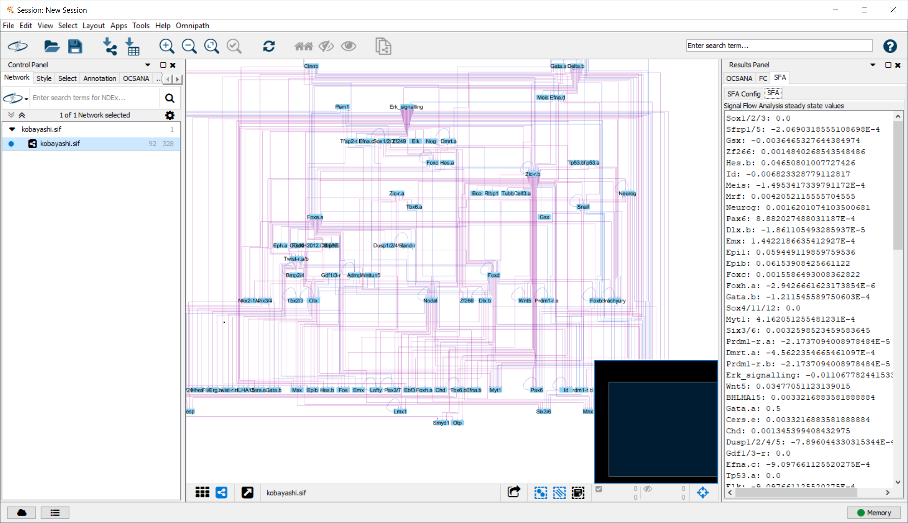
We repeat this analysis performing a perturbation of the FC nodes. As described in Kobayashi et al., 2018, down-regulation of Foxa.a, Foxd, and Neurog and up-regulation of Zic-r.b, and Erk signaling would lead to the mesenchymal tissue cell fate in the ascidian embryo.
We can simulate this experiment using SFA by selecting Zic-r.b, and Erk signaling as activated nodes, and Foxa.a, Foxd, and Neurog as inactivated nodes
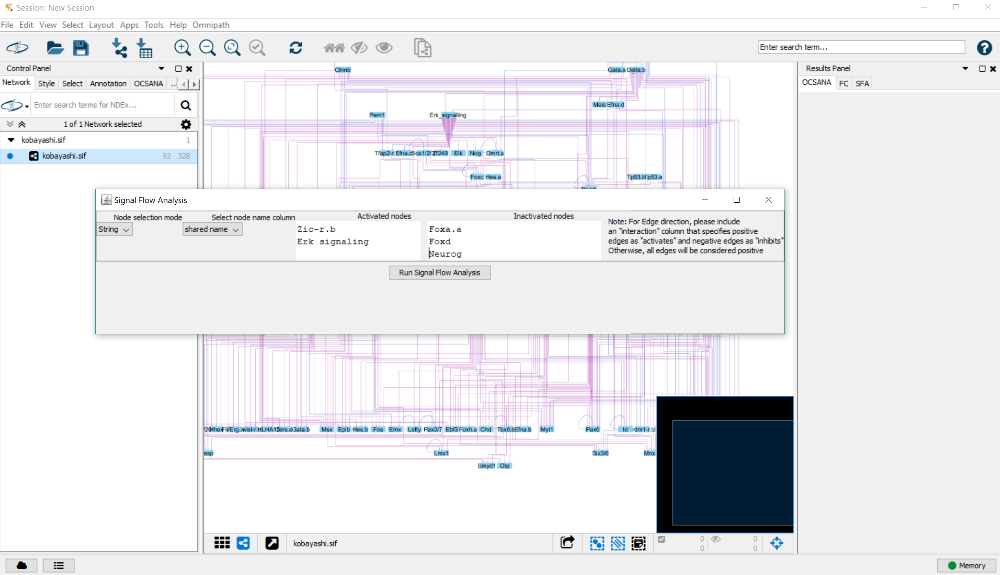Again, the configuration and results appear in the Results Panel.
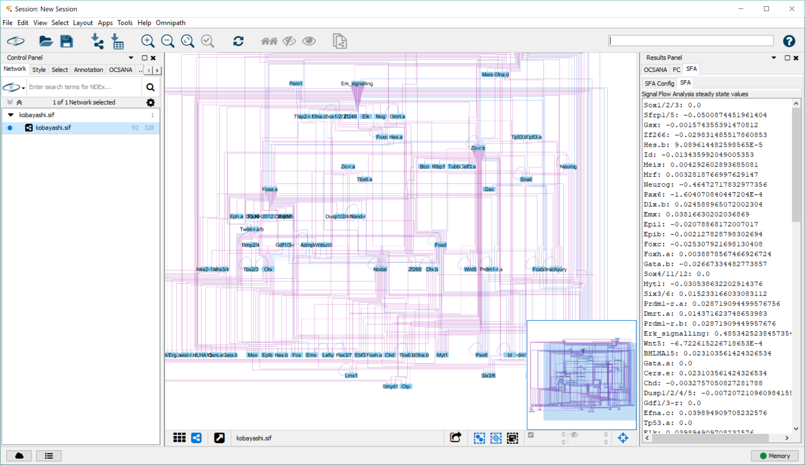Using the steady state log values produced by SFA, we can calculate a direction of activity change between the perturbed and unperturbed state, synonymous with a logFC value.
For example, the log steady state value produced of mesenchymal marker Fli/Erg.a in the unperturbed state is 0.00332. The value in the above perturbation is 0.02310. by computing the difference of perturbed vs unperturbed (0.02310-0.00332=0.01978), we see that Fli/Erg.a is upregulated in the perturbed steady state vs unperturbed steady state.
Additionally, let’s check another cell fate marker node. Alp is a marker gene for endoderm specification. The steady state log value of Alp in the unperturbed state is 3.2139E-5. The value steady state log value of Alp in the perturbed state is -0.02999. When we compute the direction of activity change, (-0.02999-3.2139E-5=-0.03002), we see that Alp is downregulated under this perturbation.
Identifying Feedback Vertex Set Control Sets (FC) with source nodes¶
- as performed above, we have our set of source nodes
Identifying CIs with OCSANA¶
- set source nodes to nodes
- example: target node of Epi1
- results
Simulating FC and CI node perturbations using SFA¶
- yay!